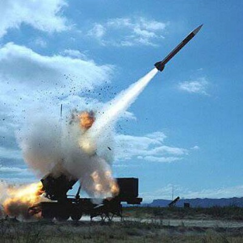

Recently I purchased the super awesome penguin set expecting just a set of normal penguins for the Price. Man was I blown away when those penguins were everything you said they'd be. One even had a genuine rocket launcher! I might have blown off a foot in the fun, but at least now I get to roleplay that I'm a pirate. Yaaaarrrr have to try these freakin penguins out.
With full disclosure one of the penguins is kinda lame, in my batch his name was jimmy. Jimmy just didn't have bobby's flare. I mean part of it is that bobby was the rocket launcher shooter, and Jimmy was the one that only got to load it, so I don't really blame him. Poor Jimmy, always getting the slapstick soot face from bobby getting it too close to him. Tragic really.
Towards the end we graduated from small rocket launchers to a big truck launched one. anyways I'm bored of bullshitting so here's some more lyrics- santaria-I don't practice Santeria I ain't got no crystal ball Well, I had a million dollars but I, I'd spend it all. If I could find that Heina, and that Sancho that she's found. Well I'd pop a cap in Sancho I'd slap her down. What I really wanna know, mah baby, mmmm... What I really wanna say I can't define. Well it's love, that I need. Ohh...
